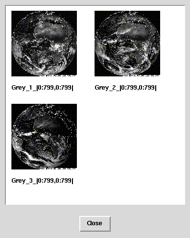

| [Prev] | [Up] |
SELECT img FROM earth AS img WHERE SOME_CELL( img[325:475,200:300] = 0c )The SOME_CELL-operator returns TRUE if at least one cell in the specified domain meets the condition, in this case the existance of at least one totally black pixel. When the above example is applied to the earth collection one object is filtered out of the result set by the server:

| [Prev] | [Up] |
03-Mar-1998